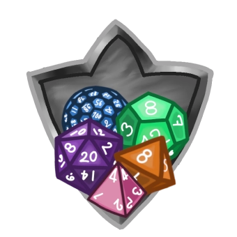

nombre d'inscrits
999999
Le concept
Rolist-Mingle a pour vocation d'aider à la rencontre de rôlistes, confirmés ou non. Pour tout ceux qui souhaiteraient jouer plus ou se lancer dans le Jeu de Rôle sur table ou à distance, Rolist-Mingle se veut un lieu d'échange et de rencontre entre rôlistes avec les mêmes envies. A ton inscription, tu pourras définir ton profil de rôliste symbolisé par différents dés de JDR et retrouver votre ou vos "moitiés" pour joueur plus souvent !